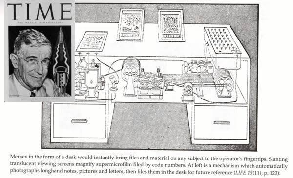

EL LEGADO DE VANNEVAR BUSH
VANNEVAR BUSH
Vannevar Bush, un prestigioso científico norteamericano, en julio de 1945 publicó un artículo denominado “As we may think”
(Como nosotros pensamos). En este texto describía un dispositivo al cual nombró Memex (Memoria Extendida),
que tenía la función de almacenar gran cantidad de información, donde el usuario podía acceder a esta con rapidez y flexibilidad,
utilizando el uso de vínculos que los unía en forma no secuencial.
Vannevar Bush en su escritorio
Los conceptos futuristas de Bush eran mucho más avanzados que la tecnología que existía en su época,
por lo que no tuvo la oportunidad de plasmar sus ideas a la realidad.

Una breve descripción del funcionamiento de Memex, publicada en la revista TIME
VANNEVAR BUSH
Ted nació en 1937 cerca de una aldea de Greenwich, Nueva York y fue el primero en acuñar el término Hipertexto en 1965. Su afición de coleccionar infinidad de objetos le condujo al mundo computacional. Obtuvo su licenciatura en Filosofía por la Universidad de Swarthmore en 1959. Realizó maestría en Sociología en Harvard en 1963 y concluyó su doctorado en Keio para el 2002. Actualmente es profesor honorario de Wadham College de Oxford y miembro de Oxford Internet Institute, donde realiza sus investigaciones.
Investigado y Programado por: Joel Alfonso Álvarez del Castillo Romo